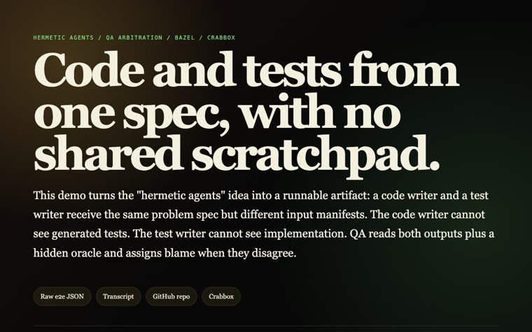
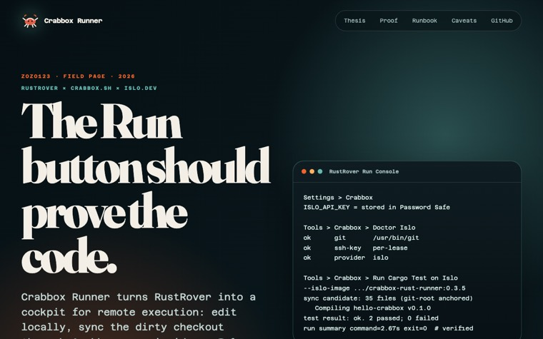
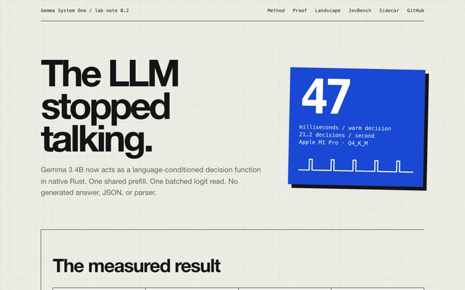
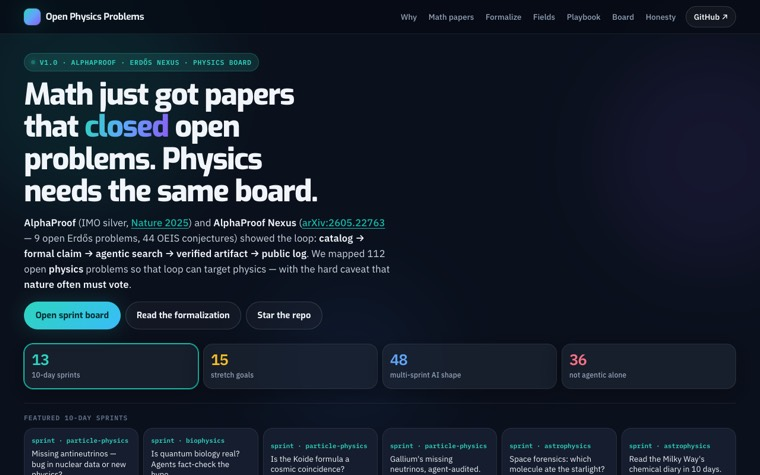
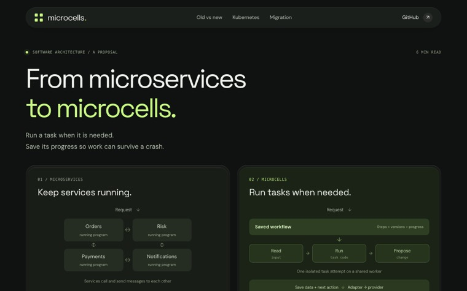

eliaz : 2026 · living preprint · v3
OCT 2026
Yossi Eliaz

277public repos
39live pages here
15years on GitHub
50followers
✦ Selected work
Now building
Systems for coding agents, and one genome-scale measurement. Each states its limits.


THESIS 001 • 2026
THE LIVING LAYER
A speculative architecture thesis.
What if sandboxes were the universal execution primitive, and one governed database held UI, logic, state, history, and policy?
Software would be instantiated, not deployed.
What if sandboxes were the universal execution primitive, and one governed database held UI, logic, state, history, and policy?
Software would be instantiated, not deployed.
✦ Featured essay · Jun 2026
Databases in the AI Era
What fifty years of database systems must become when the dominant reader of data is no longer human.
Read it live → Fig. 00 — captured live
Fig. 00 — captured live
§ 01
AI Agents & Sandboxes
Field guides, demos, and measurements on agent execution. Every figure is a live page.
 Fig. 01● live pageThe Sandbox ShiftWhen isolated execution helps agent systems, and how to choose an approach, with an interactive decider.View live →
Fig. 01● live pageThe Sandbox ShiftWhen isolated execution helps agent systems, and how to choose an approach, with an interactive decider.View live → Fig. 02● live pageCI Caching Is Not One CacheA practical field guide to GitHub Actions cache strategy.View live →
Fig. 02● live pageCI Caching Is Not One CacheA practical field guide to GitHub Actions cache strategy.View live → Fig. 03● live pageWasted CyclesFind the machine time blocking agent work: local traces and GitHub Actions latency, with a one-line installer.View live →
Fig. 03● live pageWasted CyclesFind the machine time blocking agent work: local traces and GitHub Actions latency, with a one-line installer.View live →
Fig. 04● live pageHermetic AgentsCode and tests from one spec with no shared scratchpad: separate coder and tester contexts, and QA that assigns blame when they disagree.View live → Fig. 05● live pageBazel 9 × montyBuilding pydantic/monty with Bazel 9, remote cache, and remote execution: 121 s cold, 15.7 s fully cached.View live →
Fig. 05● live pageBazel 9 × montyBuilding pydantic/monty with Bazel 9, remote cache, and remote execution: 121 s cold, 15.7 s fully cached.View live → Fig. 06● live pageAI Sandbox LandscapeA map of the execution-sandbox ecosystem.View live →
Fig. 06● live pageAI Sandbox LandscapeA map of the execution-sandbox ecosystem.View live → Fig. 07● live pageOne Lab Per KernelA technical design for running a GPU-kernel research loop (SOL-ExecBench) reproducibly on Islo sandboxes.View live →
Fig. 07● live pageOne Lab Per KernelA technical design for running a GPU-kernel research loop (SOL-ExecBench) reproducibly on Islo sandboxes.View live → Fig. 08● live pageRust It UpShould this repo be rewritten in Rust? An evidence-based migration score.View live →
Fig. 08● live pageRust It UpShould this repo be rewritten in Rust? An evidence-based migration score.View live → Fig. 09● live pageInferoaInference-native agent mechanics: prefix caching, context compression, and routing.View live →
Fig. 09● live pageInferoaInference-native agent mechanics: prefix caching, context compression, and routing.View live → Fig. 10● live pageAgentic AirbyteAn agent plans, a Crabbox sandbox runs, Airbyte moves the data.View live →
Fig. 10● live pageAgentic AirbyteAn agent plans, a Crabbox sandbox runs, Airbyte moves the data.View live → Fig. 11● live pageEvals or You're BlindPydantic AI and Pydantic Evals on disposable sandboxes.View live →
Fig. 11● live pageEvals or You're BlindPydantic AI and Pydantic Evals on disposable sandboxes.View live → Fig. 12● live pageRepo2RLEnv × CrabboxScore Harbor pr_diff tasks on a remote sandbox in about 50 seconds.View live →
Fig. 12● live pageRepo2RLEnv × CrabboxScore Harbor pr_diff tasks on a remote sandbox in about 50 seconds.View live → Fig. 13● live pageOdysseus × CrabboxA self-hosted AI workspace on a throwaway microVM, in one command.View live →
Fig. 13● live pageOdysseus × CrabboxA self-hosted AI workspace on a throwaway microVM, in one command.View live → Fig. 14● live pageTiny Long-Memory BenchmarkA LongMemEval-style memory benchmark fanned out across sandboxes.View live →
Fig. 14● live pageTiny Long-Memory BenchmarkA LongMemEval-style memory benchmark fanned out across sandboxes.View live → Fig. 15● live pageMeta-harness on IsloA deterministic simulation of harness optimization: scripted agent, pattern-matching proposer, five toy tasks.View live →
Fig. 15● live pageMeta-harness on IsloA deterministic simulation of harness optimization: scripted agent, pattern-matching proposer, five toy tasks.View live → Fig. 16● live pageenv-rosettaThe same Wordle environment across four RL frameworks and four sandboxes.View live →
Fig. 16● live pageenv-rosettaThe same Wordle environment across four RL frameworks and four sandboxes.View live →
Fig. 17● live pageCrabbox Runner for RustRoverRun Rust commands in OpenClaw Crabbox sandboxes from the IDE.View live →
Fig. 18● live pageGemma System OneGemma 3 4B as a one-forward-pass decision function in native Rust, with shared-state inference across many questions.View live → Fig. 19● live pagePokeloopA genetic algorithm over LLM policies learning Pokémon GO.View live →
Fig. 19● live pagePokeloopA genetic algorithm over LLM policies learning Pokémon GO.View live → Fig. 20● live pageunity-loopUnity scenes built by agents on remote sandboxes, judged by a vision-model tournament.View live →
Fig. 20● live pageunity-loopUnity scenes built by agents on remote sandboxes, judged by a vision-model tournament.View live → Fig. 21● live pagewolfram-fb0AI-written x86-64 assembly and eBPF drawing cellular automata straight to /dev/fb0.View live →
Fig. 21● live pagewolfram-fb0AI-written x86-64 assembly and eBPF drawing cellular automata straight to /dev/fb0.View live →
§ 02
Science & Genomics
Computational genomics, open physics, and evidence-aware compute.
 Fig. 22● live pageBring Your Own GenomeReference broadcast by VM snapshot: warm one sandbox with the reference and indices, then fork it copy-on-write per chromosome for genomic scatter-gather.View live →
Fig. 22● live pageBring Your Own GenomeReference broadcast by VM snapshot: warm one sandbox with the reference and indices, then fork it copy-on-write per chromosome for genomic scatter-gather.View live →
Fig. 23● live pageOpen Physics Problems112 open physics problems mapped like open mathematics: publication cultures, refutability, and ten-day agentic sprints.View live → Fig. 24● live pageEvidence-Aware MapReduceFork workers freely while keeping evidence, uncertainty, and shared origins visible, so a repeated error is not counted as consensus. Preprint, 2026.View live →
Fig. 24● live pageEvidence-Aware MapReduceFork workers freely while keeping evidence, uncertainty, and shared origins visible, so a repeated error is not counted as consensus. Preprint, 2026.View live →
§ 03
Deep Dives & Essays
Longer reads and field reports on how software is being rearranged.
 Fig. 25● live pageThe Stochastic CPUA field report on the cloud being rebuilt for agents: the agent hour, two-layer caches, snapshot provenance.View live →
Fig. 25● live pageThe Stochastic CPUA field report on the cloud being rebuilt for agents: the agent hour, two-layer caches, snapshot provenance.View live →
Fig. 26● live pageFrom Microservices to MicrocellsA plain explanation of microcells: tasks that run when needed, save progress, and survive a crash, plus a safe migration path.View live → Fig. 27● live pageFree* IntelligenceA field report on the difference between a fluent model answer and an accountable agent harness.View live →
Fig. 27● live pageFree* IntelligenceA field report on the difference between a fluent model answer and an accountable agent harness.View live → Fig. 28● live pageThe Living LayerA speculative architecture thesis: sandboxed execution plus governed, queryable state.View live →
Fig. 28● live pageThe Living LayerA speculative architecture thesis: sandboxed execution plus governed, queryable state.View live → Fig. 29● live pageThe Data That Taught the MachinesHow Stack Overflow trained its own replacement.View live →
Fig. 29● live pageThe Data That Taught the MachinesHow Stack Overflow trained its own replacement.View live → Fig. 30● live pageThe Loop Is Coming Apartjj, Crabbox, and the unbundled development cycle: the diff is the unit of work.View live →
Fig. 30● live pageThe Loop Is Coming Apartjj, Crabbox, and the unbundled development cycle: the diff is the unit of work.View live → Fig. 31● live pageIntel: Vision Without ExecutionA comic-style look at Intel's 2000–2026 journey.View live →
Fig. 31● live pageIntel: Vision Without ExecutionA comic-style look at Intel's 2000–2026 journey.View live →
§ 04
Talks
Slides and talk pages.
 Fig. 32● live pageA Sandbox Provider for Apache AirflowOne ephemeral microVM per Airflow task try, for fast fan-out and controlled untrusted execution. Airflow Town Hall, July 2026.View live →
Fig. 32● live pageA Sandbox Provider for Apache AirflowOne ephemeral microVM per Airflow task try, for fast fan-out and controlled untrusted execution. Airflow Town Hall, July 2026.View live → Fig. 33● live pageA Million Builds, a One-Hour RobotRust China Conf: a simulated robot, a stale-observation bug, the Rust fix, and the Incredibuild rebuild loop, with recorded evidence.View live →
Fig. 33● live pageA Million Builds, a One-Hour RobotRust China Conf: a simulated robot, a stale-observation bug, the Rust fix, and the Incredibuild rebuild loop, with recorded evidence.View live →
§ 05
Quant Finance
Market microstructure, made touchable.


§ 06
Receipts
Public activity, continuously updated.